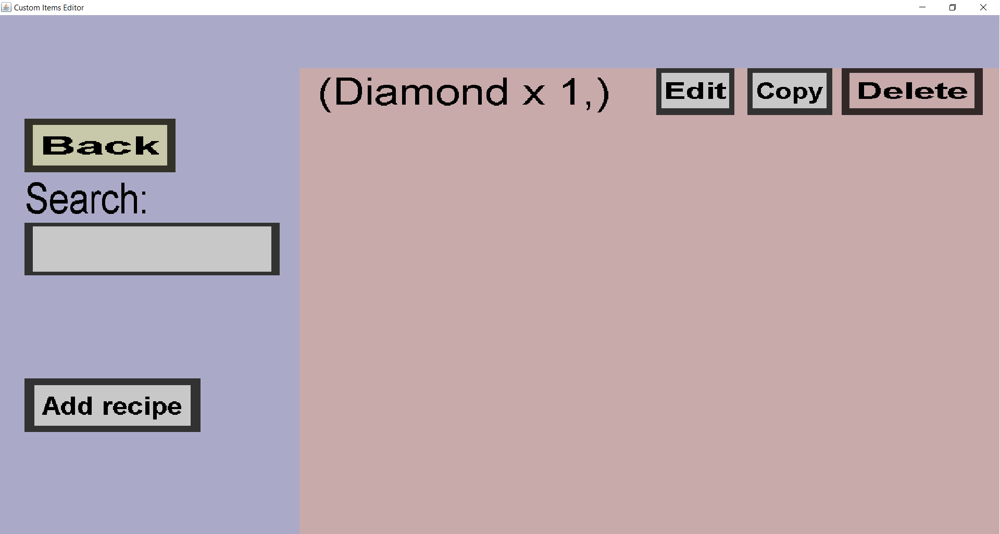

The container recipe overview can be used to view and modify the list of recipes of a given
custom container. If the custom container you're editing has a single recipe with a single
diamond as output, it should look like this:

-
The 'Back' button will take you back to the container edit menu
for the container you're currently creating or editing.
-
The edit field below 'Search:' can be used to filter on recipes with a given result.
(Actually recipes whose textual description contains the text inside that edit field.)
-
The 'Add recipe' button will take you to the container recipe edit menu,
where you can create a new recipe to add to the list of recipes of this custom container.
-
The 'Edit' button will take you to the container recipe edit menu,
where you can modify the corresponding recipe (in this case the recipe with 1 diamond as output).
-
The 'Copy' button will also take you to the container recipe edit menu.
All fields and slots will be filled in with the values of the corresponding recipe, but ýou
are creating a new recipe rather than modifying it.
-
'The 'Delete' button will remove the corresponding container recipe from this list of container
recipes.